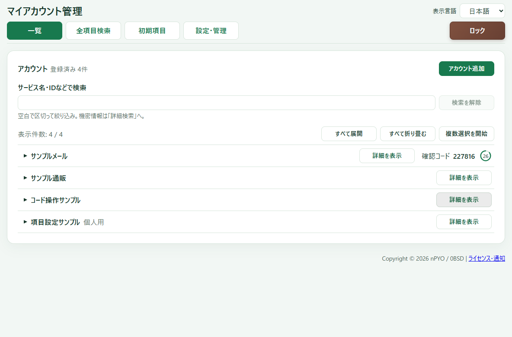
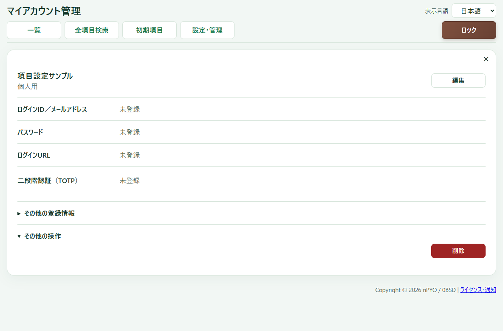
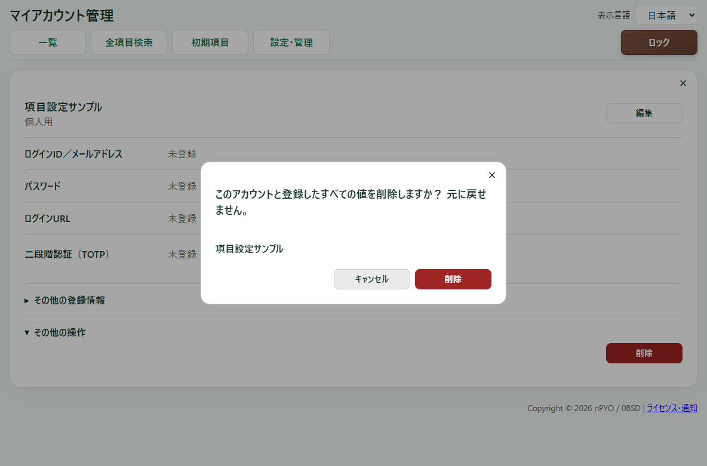
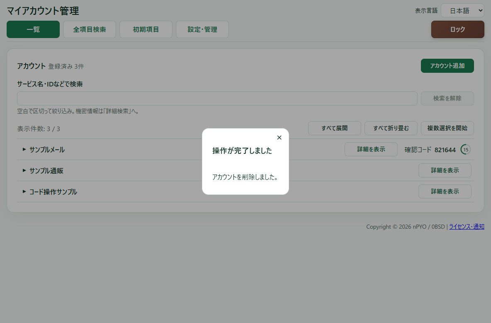

201件のアカウントを削除
対象を確認して1件だけ削除します。必要なデータは先にバックアップしてください。
1削除するアカウントを確認
対象の［詳細を表示］を押します。例は項目設定サンプルです。

2［その他の操作］を開く
詳細画面で［その他の操作］を開き、［削除］を押します。

3確認画面で対象名を見る
間違っていたら［キャンセル］を押します。

4取り消した結果を確認
キャンセルすると、削除せず詳細へ戻ります。
5削除する場合は再度確認する
再び［削除］を押し、対象名を確認して確認画面の［削除］を押します。

6完了を確認する
アカウントを削除したメッセージを閉じます。

7一覧を確認する
対象が消え、他のアカウントが残っていることを確認します。